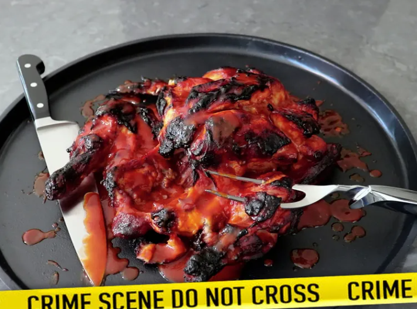

"Cheesy, pepperoni-topped pizzas with a crispy, chewy crust. The homemade dough is inspired by the famous 2-ingredient pizza doughs, with just a few more ingredients to add better flavor, and it's ready to top and bake in just 10 minutes." —Chef John
This crime scene chicken looks like it’s been a victim of fowl play, but the technique is much more than a dramatic presentation. It’s a way to roast chicken that delivers incredible flavor and tender, juicy meat. Be sure to splatter the tray with blood sauce for the full CSI effect.

This traditional meatloaf recipe made with sautéed vegetables, spices, and bread crumbs is moist and flavorful and topped with an old-fashioned glaze. Cook time will depend on the size and shape of your loaf, as well as the type of baking pan you use. Serve this hearty meal on cool fall or winter evenings with mashed potatoes and a simple mushroom gravy.